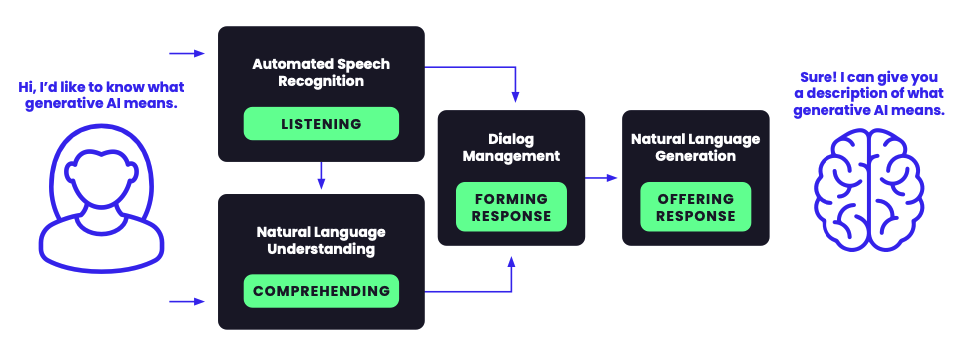

Multi-Agentic RAG-CAG Based Chatbot for Supply Chain

Project Overview
Developed an advanced multi-agent chatbot system using RAG (Retrieval Augmented Generation) and CAG (Context Augmented Generation) for pharmaceutical supply chain optimization. The system enables complex supply chain analytics through natural language interactions.
Key Features
- Specialized multi-agent system for comprehensive supply chain analysis
- Real-time data processing and analytics capabilities
- Natural language interface for complex queries
- Autonomous decision-making for inventory and logistics optimization
Technical Implementation
Multi-Agent Architecture
- Implemented specialized agents for different supply chain functions:
- Demand Forecasting Agent
- Route Optimization Agent
- Inventory Management Agent
- Query Processing Agent
- Developed inter-agent communication protocols
- Created hierarchical decision-making system
RAG & CAG Implementation
- Integrated RAG for accurate information retrieval from supply chain data
- Implemented CAG for context-aware response generation
- Created custom knowledge bases for pharmaceutical supply chain domain
- Developed vector embeddings for efficient information retrieval
Natural Language Processing
- Built advanced NLP pipeline for query understanding
- Implemented context maintenance across conversations
- Created domain-specific language models for supply chain terminology
Technologies Used
- Framework: LangChain, Transformers, PyTorch
- Vector Database: Pinecone, FAISS
- Backend: Python, FastAPI
- Data Processing: Pandas, NumPy
- Deployment: Docker, Kubernetes
Impact & Results
- Streamlined supply chain analytics through natural language interface
- Reduced decision-making time through automated insights
- Improved data accessibility for non-technical stakeholders
- Enhanced operational efficiency through real-time optimization
Future Enhancements
- Integration with additional data sources
- Enhanced predictive capabilities
- Expanded multi-language support
- Advanced visualization features